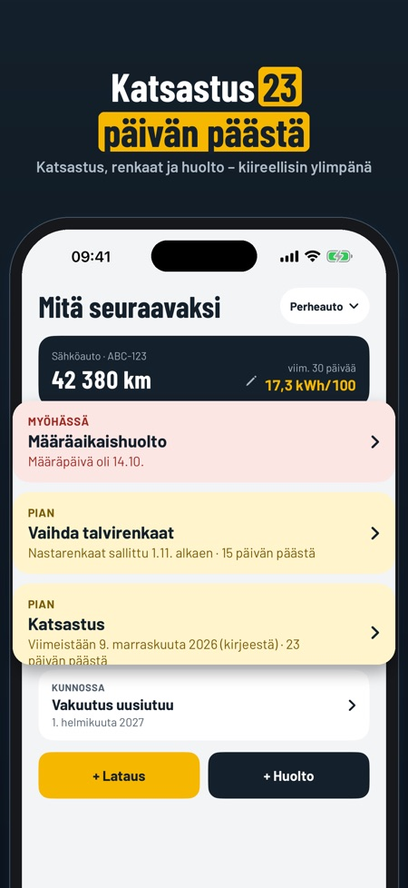
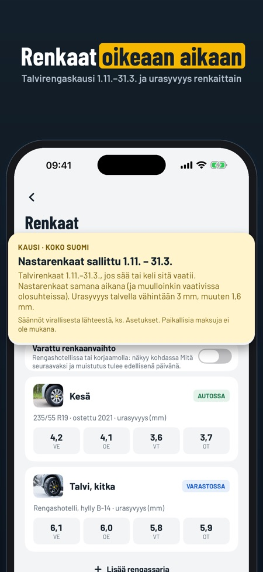
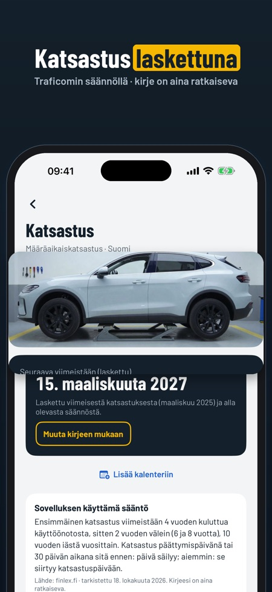

Huollot, tankkaus ja renkaat. Talvirenkaat vaaditaan 1.11.–31.3. kelin niin vaatiessa. Autokirja näyttää, milloin renkaanvaihto koskee sinua, seuraavan katsastuksen ja auton kulut.



Tiedätkö, milloin seuraava katsastus on? Autokirja laskee sen rekisteröintitodistuksesta ja Traficomin säännöstä – ja muistuttaa renkaanvaihdosta ja huollosta. Koko historia säilyy, kunnes myyt auton.
MITÄ SEURAAVAKSI
• Katsastus, huolto, renkaanvaihto, vakuutus ja ajoneuvovero yhdellä näkymällä, kiireellisin ylimpänä
• Muistutukset ennen määräpäiviä
KATSASTUS
• Seuraava katsastus lasketaan käyttöönotosta Traficomin säännöllä (4, 6, 8 ja 10 vuotta, sitten vuosittain)
• Onko kirjeessä eri päivä? Kirjoita se – kirje on aina ratkaiseva
• Tarkistuslista ennen katsastusta, ja päivä suoraan kalenteriin
RENKAAT
• Talvirengaskausi 1.11.–31.3.
• Varattu renkaanvaihto rengashotellissa, muistutus edellisenä päivänä
• Kesä- ja talvirenkaat, urasyvyys renkaittain ja säilytyspaikka
• Varoitus, kun urasyvyys alittaa vaatimuksen
POLTTOAINE JA LATAUS
• Litrat tai kWh, hinta ja mittarilukema
• Kulutus 100 kilometrillä, laskettuna täydestä tankista tai täydestä latauksesta
• Mittarilukema ei voi pienentyä, ja sovellus kysyy, jos luku näyttää väärältä
• Päivitä mittarilukema suoraan etusivulta
HUOLLOT JA KULUT
• Huoltokirja: korjaamo, mitä tehtiin, hinta ja skannattu kuitti
• Seuraava huolto oman huoltovälisi mukaan kilometreinä tai kuukausina
• Kulut kuukausittain ja luokittain sekä hinta per km
MYYNTIRAPORTTI JA ASIAKIRJAT
• Koko historia PDF:nä ostajalle, halutessasi kuittien kanssa ja hinnat piilotettuina
• Näe raportti omilla merkinnöilläsi ennen ostoa
• Rekisteröintitodistus, vakuutuskirja ja takuu skannattuina autokohtaisesti
• Kaikkien merkintöjen vienti CSV-tiedostona
VARMUUSKOPIO
• Tallenna kaikki yhdeksi tiedostoksi ja siirrä uuteen iPhoneen – ilman ostoa
• Muistutus, kun edellisestä kopiosta on kauan
Ei tiliä eikä rekisterihakua: lisäät auton itse, ja kaikki tallentuu puhelimeen.
HINTA
Yksi auto, loki, kuitit, katsastus, rengasmuistutukset ja varmuuskopio toimivat ilman ostoa. Useampi auto, kulut ja kaaviot, myyntiraportin jakaminen, asiakirjat ja CSV avautuvat kertaostolla. Ei tilausta.
Säännöt ovat peräisin Traficomilta, Statens vegveseniltä, Transportstyrelseniltä ja Færdselsstyrelseniltä, lähde ja päivämäärä näkyvät sovelluksessa. Autokirja on riippumaton eikä liity niihin. Tarkista aina saamasi kirje.